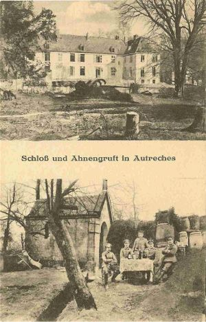

La maison de Nanteuil
Au XIIe siècle, la seigneurie d'Autrêches appartient à une branche de la maison de Nanteuil (Nanteuil-la-Fosse, dans la Marne, et non dans l'Aisne).
Le premier seigneur connu est Gaucher Ier, avoué de Vic-sur-Aisne pour l'abbaye de Saint-Médard, à laquelle la terre d'Autrêches était venue. Il vivait dans la seconde moitié du XIIe siècle. À sa mort, la seigneurie échoit à son second fils, Guy de Nanteuil, qui la tient de la fin du XIIe siècle au début du XIIIe.
Le fils aîné de Guy, Gaucher II, dit d'Autrêches, est cité avec éloges par Joinville dans ses Mémoires. Il accompagne le roi Saint Louis dans sa croisade en Terre sainte et y succombe à la bataille de Mansourah, en février 1250. On en rapporte le récit suivant :
Gaucher d'Autrêches était couvert de son armure et se disposait à combattre les Infidèles. Il montait un cheval entier très fougueux. Les ennemis qu'il allait attaquer étaient montés sur des juments, l'ardeur de ces cavales anima le cheval de Gaucher, au point de le rendre indomptable. En vain, son cavalier faisait tous ses efforts pour le retenir, il s'élança au milieu des escadrons musulmans et renversa Gaucher, qui tomba, percé de coups. Les Français le dégagèrent et le ramenèrent dans sa tente où il expira peu après.
En partant pour la croisade, Gaucher d'Autrêches avait laissé en France sa femme et ses deux fils. En 1250, la seigneurie passe à son fils aîné, André, puis à son petit-fils Gaucher III, qui ne laisse qu'une fille. On arrive ainsi au XIVe siècle et à l'extinction de la maison de Nanteuil.
La maison de Guines, dite de Coucy
Enguerrand Ier de Guines, dit de Coucy, devient possesseur de la seigneurie en épousant la fille de ce dernier, dame d'Autrêches. Il meurt en 1344 et laisse ses domaines à son fils Enguerrand II de Coucy, qui n'a pas d'enfants. La seigneurie revient alors à la sœur de celui-ci, Jeanne, en 1351.
La maison de Béthune
En 1351, Jeanne de Coucy épouse Jean de Béthune, seigneur de Vendeuil, qui devient ainsi seigneur d'Autrêches. Jeanne meurt en 1363 et son mari en 1373 ; tous deux sont inhumés dans la chapelle Saint-André de l'abbaye d'Ourscamp. Ils laissent plusieurs enfants :
- Robert, seigneur de Vendeuil ;
- Jeanne, qui épouse Jean de Roye, seigneur de Plessier-de-Roye et de Crapeaumesnil ;
- Jean de Béthune, dit de Locres, qui hérite des domaines d'Autrêches et d'Anizy ;
- Marie.
Jean II de Béthune, dit de Locres, épouse Isabeau d'Estouteville le 3 novembre 1401. Un arrêt du parlement du 11 avril 1407 lui confirme les seigneuries de Bailly et d'Autrêches. Il est tué à la bataille d'Azincourt, en 1415. Sa veuve lui survit jusqu'en 1438.
La maison de Hennin, dite de Bossut
En 1438, leur fille Catherine de Béthune hérite de la seigneurie d'Autrêches. Elle épouse Jean de Hennin, seigneur de Bossut, qui meurt peu après le mariage. Catherine décède en 1458.
Leur fils, Gauthier de Hennin, dit de Bossut, devient alors seigneur de Bailly et d'Autrêches. Il épouse Jeanne de Mesnil-Soissons, dont il n'a pas d'enfants. Avant de mourir, il fonde dans l'église d'Autrêches un obit solennel, par testament du mercredi après Pâques de l'année 1474. Après son décès, la seigneurie est vendue.
Les seigneurs de Saisseval
En 1475, la terre d'Autrêches est adjugée au seigneur de Sessval ou Saisseval, qui tire son nom du village du même nom, situé près de Picquigny, en Picardie. Les armes de cette famille sont « d'azur à deux bars adossés d'argent ». Il meurt encore jeune, laissant une fille, Jeanne, sous la tutelle de sa mère. En 1518, la veuve de Saisseval est dame d'Autrêches.
Les noms des seigneur et dame de Saisseval nous sont révélés par un acte notarié du 22 mars 1770, passé devant Me Jean-Baptiste-Nicolas Cuneaux, notaire à Vic-sur-Aisne. Le chapitre de la cathédrale de Noyon possédait de toute ancienneté un surcens de 14 livres tournois et un essein de pois de rente à prendre sur des terres et prés situés en la terre et seigneurie d'Autrêches. Par un acte de composition passé avec la dame de Saisseval le 11 juin 1518, il fut convenu que le chapitre paierait, pour percevoir cette rente, à titre de contribution :
- une indemnité de 50 livres tournois, une fois donnée ;
- des droits de mutation estimés à 8 livres, portés sur la tête d'un homme présenté par le chapitre et renouvelés à son décès.
C'est ce que l'on appelait le droit féodal de l'homme vivant et mourant. Cette perception s'est pratiquée jusqu'à la Révolution. Son dernier renouvellement eut lieu le 22 mars 1770, quand le chapitre le fit en faveur d'Antoine-Marie de Louvel, seigneur d'Autrêches, sur la personne d'Armand Villiers, enfant de chœur à la cathédrale de Noyon.
Les Bosbecq
En 1520, Jeanne de Saisseval ou de Sesseval, fille des précédents seigneur et dame, épouse Jean de Bosbecq, écuyer, capitaine, et lui apporte en mariage la seigneurie d'Autrêches. Les Bosbecq, famille originaire de Normandie, portaient pour armes « d'argent au lion d'azur ».
François de Bosbecq
En 1542, François de Bosbecq, leur fils, homme d'armes « de la bande de Monseigneur de Vendosme », seigneur d'Autrêches, de Poulandon et de Moissy-sur-Yonne, donne au bailli royal de Pierrefonds, le 15 avril, l'aveu et le dénombrement de la terre d'Autrêches. Il avait épousé Françoise de Frétel, fille de Pierre de Frétel et de Catherine de Guise. Ces époux avaient fondé un obit annuel, pour eux deux, en l'église d'Autrêches, par acte de donation du 23 octobre 1548.
Le 17 novembre 1549, François de Bosbecq donne le dénombrement de la terre et seigneurie de Poulandon, à Ressons-le-Long. À son décès, quelques années plus tard, sa veuve fait une nouvelle déclaration de ce domaine, le 10 décembre 1566. Il laissait deux filles : Charlotte, mariée à Antoine de Gonnelieu, écuyer, seigneur de Jumencourt, et Catherine.
Les deux époux avaient eu un fils, nommé Geoffroy, mort jeune à Poulandon et enterré dans l'église de Ressons-le-Long. Françoise de Frétel est morte aussi au manoir de Poulandon et enterrée dans la même église. La pierre tombale qui recouvre sa dépouille et celle de son fils se voit encore dans cette église, du côté de l'autel de la Vierge, mais l'inscription est en grande partie effacée ; on croit cependant pouvoir lire la date de 1583, avec les noms de Françoise de Frétel et de son fils.
Antoine de Gonnelieu est mort à Autrêches en 1572 et fut inhumé dans l'église du lieu, auprès de l'autel de la Vierge. Sa dalle funéraire fut déplacée à l'entrée du chœur, puis finalement reportée à l'entrée du grand portail, le 28 décembre 1866. Cette dalle, en pierre bleue, porte en caractères gothiques l'inscription suivante :
Ci-gîst noble hôme Abthoine de Gommelieur, chevalier, seigneur de Jumencourt, premier chambellan et capitaine des Gardes du Roi Charles IX, et gentilhomme ordinaire de la chambre de Monseigneur le Duc d'Alençon, frère dudit seigneur, lequel trépassa le vingt-sixième jour mars 1572.
Les Gonnelieu
Nicolas de Gonnelieu et Catherine de Bosbecq
Catherine de Bosbecq, fille des seigneur et dame précédents, hérite en 1556 des terres d'Autrêches et de Poulandon, qu'elle apporte à Nicolas de Gonnelieu, seigneur de Pernant, par son contrat de mariage passé devant Me Quinquet, notaire à Soissons, le 15 mai 1559. La famille de Gonnelieu, originaire du Cambrésis, portait pour armes « d'or à la bande de sable ».
Nicolas de Gonnelieu, seigneur vicomte de Pernant et d'Autrêches, était chevalier de l'Ordre du Roi et lieutenant d'une compagnie de 50 hommes d'armes de ses ordonnances. Avec sa dame, il habita la ville de Soissons. Pris par des embarras financiers, ces époux empruntèrent 1 200 livres tournois à Louis Charpentier, ancien notaire à Vic-sur-Aisne, pour lesquelles ils constituèrent en sa faveur une rente annuelle de 100 livres, par acte passé devant Me Wallet, notaire à Soissons, le 31 janvier 1576.
Les seigneur et dame de Gonnelieu de Bosbecq sont morts après 1579, laissant trois fils qui se partagèrent le patrimoine de leur père :
- Antoine, l'aîné, eut la seigneurie et vicomté d'Autrêches ;
- Jean, le second, hérita de la terre et vicomté de Pernant ;
- François, le troisième, eut la seigneurie de Poulandon dans son lot.
La rente de 100 livres constituée au profit de Louis Charpentier retomba à la charge des deux frères Jean et François, chacun pour moitié. Ils en passèrent un acte de reconnaissance, le 22 août 1588, à César Le Féron, petit-fils de Louis Charpentier, décédé. François se libéra de sa part, soit 600 livres, suivant une quittance du 5 juin 1610 reçue par Me Adrien Picart, notaire à Vic-sur-Aisne.
Antoine de Gonnelieu, chevalier, seigneur d'Autrêches
En 1588, Antoine de Gonnelieu épouse Catherine de Caulaincourt, dont il a deux fils, Léonor et René. Aux registres paroissiaux d'Autrêches, on constate qu'il fut parrain le 18 juin 1591 et le 17 octobre 1593 ; à la première date il est qualifié de « seigneur de Jumencourt », à la seconde d'« écuyer seigneur d'Autrêches ».
Ce seigneur meurt en 1595 ; sa veuve lui survit jusqu'en 1611. Leurs deux enfants, alors mineurs, sont placés sous la tutelle de leur mère, puis, à la mort de celle-ci, sous celle de leur oncle Jean de Gonnelieu, seigneur de Pernant. René de Gonnelieu devient seigneur de Jumencourt et décède jeune, sans postérité.
Léonor de Gonnelieu
Léonor de Gonnelieu, écuyer, est seigneur d'Autrêches après la mort de son père, en 1595. Les archives municipales nous apprennent qu'il fut plusieurs fois parrain en l'église de la paroisse, du 15 octobre 1601 à septembre 1610. C'est à peu près tout ce que l'on sait de ce jeune seigneur.
Sa mère, Catherine de Caulaincourt, est décédée au château d'Autrêches le 13 octobre 1611. Le registre paroissial de l'époque relate ainsi sa mort : « Est décédée Catherine de Caulincourt, dame d'Autrêches, qui trépassa sur les quatre heures après-midy. » Le lendemain, dit le même registre, « a esté chanté l'enterrement de ladte dame par le curé de Saint-Christophe, celui de Morsain, celui d'Audignicourt ». D'autres services ont encore été célébrés à sa mémoire par divers prêtres les 19 et 20 octobre, puis les 8, 9, 15 et 16 novembre suivants.
Ce n'est guère qu'à la mort de sa mère que Léonor devient réellement titulaire de la seigneurie. À l'âge de 20 ans, au mois de juillet 1614, il est émancipé et vit encore quelques années sans contracter d'alliance. Le 6 février 1612, par acte passé devant Me Isaac Moutonnet, notaire à Pernant, il avait fondé une rente de 150 livres tournois au profit de l'église d'Autrêches, à la charge d'une messe basse à dire chaque jour de l'année.
Léonor de Gonnelieu, qui s'intitulait écuyer, seigneur d'Autrêches, Chevillecourt, Massenancourt, Hautebraye en partie et Jumencourt, meurt le 21 avril 1619, à l'âge de 25 ans. Le registre paroissial indique son décès de la manière la plus laconique : « Est décédé Monseigneur d'Autresches. Dieu veuille avoir son âme. » Toutes ces seigneuries passent, par héritage, à son oncle Jean de Gonnelieu.
Jean de Gonnelieu
Jean de Gonnelieu, chevalier, seigneur et vicomte de Pernant, Autrêches et autres lieux, s'était marié le 6 novembre 1593 à Madeleine de Bourbon, fille d'André de Bourbon, de la branche bâtarde de Bourbon-Rubempré. L'union avait été précédée d'un contrat de mariage passé le 30 juillet 1593. Gentilhomme de la chambre du Roi, il fut le fondateur de la Congrégation de Notre-Dame de Soissons, fondation faite en 1622 en faveur de sa fille Charlotte.
Le 22 juillet 1638, il était parrain à Autrêches, avec sa petite-fille Anne de Gonnelieu, de Jean Clément, fils des fermiers du Tiolet. Il est décédé après 1643, laissant de son mariage :
- Louis, chanoine régulier à Saint-Crépin de Soissons ;
- Charles, chartreux ;
- Jérôme, seigneur d'Autrêches et de Pernant ;
- Nicolas, seigneur de Bouillancourt, de Grainville et de Radepont ;
- Marie ;
- Madeleine, religieuse de la Congrégation ;
- Louise, religieuse au Trésor.
Nicolas épousa en 1647 Geneviève Branche, fille du prévôt de Laon, dont il eut trois fils et trois filles, dont deux entrèrent en religion. Les trois fils sont : Jean de Gonnelieu, seigneur de Radepont, marié en Normandie et père de deux enfants ; Adrien, seigneur de Grainville, qui se maria mais n'eut pas d'enfants ; enfin le célèbre jésuite Jérôme de Gonnelieu.
Jérôme de Gonnelieu est né à Soissons le 18 septembre 1640. Il fut l'un des orateurs jésuites en vogue au XVIIe siècle. Entré dans la Compagnie de Jésus en 1657, il fut destiné à la chaire et à la direction des âmes, qui trouvaient d'ailleurs, dans la pureté de ses mœurs et la solidité de ses vertus, une prédication vivante. Plusieurs ouvrages, fruits de sa piété et de son zèle, sont sortis de sa plume, tels que Exercices de la vie spirituelle (1701), la Pratique de la vie intérieure (1710), le Sermon de N.S. à ses apôtres après la Cène, avec des réflexions (1712) et Instructions sur la Confession et la Communion (1713). Il est mort à Paris le 25 février 1715, peu après la publication de ses ouvrages.
Jérôme de Gonnelieu, seigneur de Pernant
En 1634, Jérôme de Gonnelieu, seigneur de Pernant, Bouillancourt et autres lieux, reçoit la terre et vicomté d'Autrêches à l'occasion de son mariage avec sa première femme, Françoise de Laval. Il veut d'abord installer un receveur-comptable dans sa seigneurie d'Autrêches, pour en assurer la gérance. À cet effet, il passe un acte sous seing privé, le 26 septembre 1634, avec Nicolas Gannert, marchand-tailleur d'habits à Paris, qui vient avec sa famille habiter le château, aux gages de 150 livres par an.
Une condition expresse figure au contrat : si un différend s'élevait entre le seigneur et le gérant, ce dernier recevrait une indemnité de 600 livres tournois pour ses frais de retour à la capitale. Cette clause prudente ne tarda guère à recevoir son application : à la suite d'un incident, Gannert remit sa charge d'intendant à son seigneur le 17 janvier 1635. Il ne reçut pourtant que 300 livres tournois, avec un cheval harnaché estimé 25 écus ; mais Jérôme de Gonnelieu le déchargeait « du maniement de son revenu qu'il exerçait depuis quatre mois ».
Ce seigneur, sans doute endetté, eut souvent recours à l'emprunt. Le 26 octobre 163…, il emprunta 6 300 livres « pour subvenir à ses affaires » à Adrien Desmarc, écuyer, seigneur de Vassens, et à Suzanne d'Arcy, sa femme, moyennant une rente annuelle de 350 livres tournois. La somme fut remboursée, capital et intérêts, par sa femme, Françoise de Laval, le 4 septembre 1635.
Jérôme de Gonnelieu venait souvent résider avec sa famille au château d'Autrêches : les registres paroissiaux constatent leur présence par quatre parrainages du seigneur et de sa dame, de 1637 à 1651. Leur domicile réel était à Soissons. Françoise de Laval est morte vers 1655, laissant deux enfants : Anne, née à Autrêches en 1637, et Jérôme, né à Autrêches en 1640.
Jérôme de Gonnelieu se remarie par contrat du 24 juillet 1656 avec Élisabeth-Anne de Brouilly (qui signait Brouly), fille d'Imbert de Brouilly, chevalier, seigneur de la Brosse, maître d'hôtel ordinaire de la chambre du Roi et gouverneur des ville, château et duché de Nemours, et d'Élisabeth Coignet, son épouse. Avec sa seconde femme, il vend le 26 mars 1658 à Catherin Desmarc, écuyer, sieur de Thoury à Vassens, et à Marie de Coquillette, sa femme, sept muids de terre du terroir d'Autrêches, moyennant 8 127 livres tournois, afin de rembourser une nouvelle obligation contractée envers Adrien Desmarc, seigneur de Vassens, père de Catherin.
Le 22 septembre 1658, Élisabeth de Brouilly, dame d'Autrêches, est marraine, avec François de Conflanc, vicomte d'Oulchy, pour parrain, d'Élisabeth Desjardins, fille des fermiers du Tiolet. À son décès, survenu vers 1658, Jérôme de Gonnelieu laissait une autre fille, issue de sa seconde épouse : Élisabeth-Anne, reçue religieuse à Saint-Léger. Sa fille Anne de Gonnelieu lui succède dans toutes ses seigneuries.
Anne de Gonnelieu
À la mort de son père, en 1658, Anne de Gonnelieu hérite des seigneuries et vicomtés d'Autrêches et de Pernant. Dans certains actes, elle est parfois nommée Marie-Anne, mais c'est à tort, car son acte de naissance porte seulement le prénom d'Anne. Elle est née au château d'Autrêches le 12 octobre 1637 ; son parrain fut Laurent de Laval et sa marraine une petite fille de la paroisse, nommée « Flourence Montier ».
Un premier mariage : François de Harlus
En 1655, elle épouse en premières noces François de Harlus, seigneur et baron de Givray, mort peu de temps après. Ils eurent deux enfants : François, né en 1656, et Valentine, qui, au mois d'août 1660, était marraine à Autrêches de Valentine Lemercier. À l'acte de baptême de l'enfant, elle est nommée « fille de défunt M. le Baron de Givray ».
Le 22 mars 1669, François de Harlus, baron de Givray, était parrain, et sa sœur Valentine marraine, de François Gouillard, fils d'un marchand d'Autrêches. Les armes de la famille de Harlus sont : « de sable à un lion d'argent ; la crinière ou jube d'or, couronné de même, lampassé et armé de gueules ». François de Harlus devint capitaine d'une compagnie de cavalerie au régiment de Clermont, puis major de la ville de Soissons en 1711.
Valentine de Harlus fut encore marraine le 20 octobre 1680, avec Jean de Lavernade, seigneur d'Épagny, et le 6 novembre 1681, avec Louis de Harlus, colonel au régiment de Harlus. Le 25 juillet 1682, elle épousait, en l'église Saint-Victor d'Autrêches, messire Henry-Charles de la Fontaine, chevalier, seigneur d'Iviers, fils de défunt Henry de la Fontaine, chevalier, seigneur de Bitry, et de Marie le Picard.
Un second mariage : Richard de Gedouin
Vers 1661, Anne de Gonnelieu épouse en secondes noces Richard de Gedouin, chevalier, seigneur de Belle-Isle, capitaine de la compagnie de chevau-légers dans le régiment du Roi. Ce seigneur, noble par son père Denis Gedouin, mort secrétaire du Roi après quatorze années de service, portait pour armes « écartelé d'or et d'azur, à la croix recroiselée de l'un à l'autre ».
En 1662, Anne de Gonnelieu fut marraine de la cloche d'Autrêches, ainsi que l'indique l'inscription de celle-ci. Richard de Gedouin est décédé après 1674, laissant la terre de Pernant à son fils Joachim de Gedouin, lieutenant-colonel du régiment d'Étampes, chevalier de Saint-Louis et major de Soissons, mort en 1731.
Dame d'Autrêches jusqu'à sa mort
Devenue veuve une seconde fois, Anne de Gonnelieu se retire en 1675 au château d'Autrêches, qu'elle habite alors de manière sédentaire jusqu'à sa mort. À la poursuite de certains créanciers, la terre et seigneurie de cette vicomté sont mises en « décret » au commencement de l'année 1684. La saisie dure fort longtemps, et la veuve de Gedouin peut ainsi conserver le titre de dame d'Autrêches.
C'est en cette qualité qu'elle comparaît, le 8 février 1697, au contrat de mariage de Louis de Piennes, chevalier, seigneur des fiefs du Plessier-le-Colombier, Fécamp et Trosly-Loire en partie, y demeurant, avec Marie-Jacqueline de Harlus, veuve de Jean-Baptiste de Lance, seigneur de Chevresis-les-Dames. Le mariage eut lieu en l'église d'Autrêches le 19 du même mois. Quelque temps après, la seigneurie fut vendue à Henry-Charles de la Fontaine, son gendre.
Anne de Gonnelieu est morte le 9 octobre 1717, à l'âge de 80 ans. Son corps fut inhumé le lendemain en l'église d'Autrêches. L'acte de décès la nomme « Anne de Gonnelieu veuve de Messire de Gédoyn, dame de Pernant et ci-devant dame d'Autrêches ».
La famille de la Fontaine
En 1700, Henry-Charles de la Fontaine est seigneur de Bitry et vicomte d'Autrêches. Depuis son mariage, en 1682, avec Valentine de Harlus, il habitait le château d'Autrêches. Son frère, Philippe de la Fontaine, chevalier, seigneur de Solare, Villers-Hagron, Vendières et autres lieux, qui demeurait à Largny, vint habiter quelque temps avec lui. C'est là que fut célébré, le 5 février 1691, son second mariage avec Charlotte-Madeleine de Gaya, dame de Tresville, de la paroisse Saint-Jacques de Compiègne. Un de leurs huit enfants naquit à Autrêches : Anne-Charlotte, née le 1er mars 1692, l'aînée de cette nombreuse famille.
Henry-Charles de la Fontaine est décédé le 4 septembre 1718, à l'âge de 71 ans, étant né à Bitry le 7 octobre 1647. Il fut inhumé dans l'église d'Autrêches, en la chapelle de la Vierge. Sa femme, Valentine de Harlus, lui survécut jusqu'au 12 février 1721. De leur union étaient issus, au château d'Autrêches :
- Anne-Charlotte, née le 14 avril 1683 et baptisée le 16 mai suivant ; elle eut pour parrain Charles de Boyer, chevalier, seigneur du Perreux, et pour marraine Anne de Gonnelieu, sa grand-mère ;
- Louis-Charles, né le 1er septembre 1684, ondoyé le 4 et baptisé le 20 du même mois ; son parrain fut le colonel Louis de Harlus, colonel au régiment de Harlus, seigneur de Druon, écuyer ordinaire du Roi, et sa marraine Anne de la Fontaine, femme de Charles de Boyer, seigneur du Perreux. Il fut page de la duchesse de Bourgogne en 1702, puis enseigne-colonel du régiment de Chartres. Il est mort de la petite vérole à Ulm (Allemagne) en 1704 ;
- un fils, né le 21 septembre 1685, ondoyé mais non baptisé car il mourut le 27 du même mois ; il ne reçut donc pas de nom ;
- Marie-Françoise, née le 10 février 1687, ondoyée puis baptisée le 2 septembre suivant ; son parrain fut François le Picard, chevalier, seigneur de Résigny et autres lieux, mestre de camp de cavalerie, et sa marraine Marie de la Fontaine, fille de feu Henry de la Fontaine, chevalier, seigneur de Bitry. Celle-ci fit profession de vœux à Longpré ;
- un fils, né le 23 juin 1689. Il dut mourir peu de temps après, car on ne trouve aux registres paroissiaux d'Autrêches ni l'acte de son baptême ni celui de son décès.
Après la mort de ses père et mère, Anne-Charlotte de la Fontaine se trouva seule héritière de leur succession.
Anne-Charlotte de la Fontaine et François des Essars de Lignières
Anne-Charlotte de la Fontaine avait épousé en l'église d'Autrêches, le 8 février 1706, François des Essars, seigneur et marquis de Lignières, seigneur encore de Léchelle, Bracheux, Martiset et autres lieux, fils de feu Alexandre des Essars, marquis de Lignières, capitaine au régiment des gardes françaises, gouverneur de la ville et citadelle de Landrecies, et de feue Marie-Catherine de Mérélessart, son épouse, demeurant à Léchelle.
L'union avait été précédée d'un contrat de mariage passé le 15 décembre 1705, qui détaille la fortune respective des époux. Le futur apportait en dot 4 000 livres de rentes : 2 300 livres de sa terre de Léchelle, près de Montdidier, 300 livres de celle de Bracheux, près de Saint-Quentin, 200 livres constituées par M. le Jay, gouverneur d'Aire-en-Flandre, et 1 200 livres à prendre sur la seigneurie de Lignières. De son côté, la future apportait 6 000 livres léguées par M. Charles Boyer, chevalier, seigneur du Perreux, son beau-oncle et son parrain, et 20 000 livres données par ses père et mère. De cette union sont nés au château d'Autrêches :
- Henry-Charles-François-Valentin, le 11 juin 1707, qui eut pour parrain François des Essars, abbé commendataire de Notre-Dame de Vermand, et pour marraine sa grand-mère Valentine de Harlus ;
- François-Louis-Alexandre, né le 9 juin 1708 et baptisé à la maison par la sage-femme ; son parrain fut François le Picard, chevalier, seigneur et marquis de Résigny, maréchal de camp des armées du Roi, et sa marraine Marie-Marguerite de Mérélessart, épouse de M. Philippe-Louis de Sorel, chevalier, seigneur de Sorel, Ugny-le-Gay, la Neuville, le Plessis et autres lieux. Il dut mourir jeune à Léchelle, car un frère qui le suit, né à Léchelle, est qualifié de second fils dans un acte de vente de 1751 ;
- Henriette-Mélanie-Charlotte-Victoire, née le 26 septembre 1709 et baptisée le 2 octobre suivant ; elle eut pour parrain son grand-père Henry-Charles de la Fontaine, chevalier, seigneur de Bitry, Autrêches et Iviers, et pour marraine Charlotte-Madeleine de Gaya, femme de Philippe de la Fontaine, chevalier, comte de Solare, écuyer de Madame la duchesse du Maine. Décédée le 30 avril 1710, elle fut inhumée dans l'église d'Autrêches ;
- Marie-Catherine, née le 29 décembre 1711, dont le parrain fut François de Harlus, chevalier, seigneur et baron de Givray, major de la ville de Soissons, son grand-oncle, et la marraine Marie-Thérèse de Ménéac, femme de Jean de Lavernade, chevalier, seigneur d'Épagny.
Vers 1712, le marquis de Lignières et sa femme quittent le château d'Autrêches pour celui de Léchelle, où leur sont nés d'autres enfants dont nous ignorons les noms et les dates de naissance. Le marquis de Lignières meurt en 1740.
En 1743, le garde-chasse Victor Fontaine est l'agent des affaires de la dame d'Autrêches, marquise de Lignières. Jacques-Nicolas Cuneaux, notaire royal à Vic-sur-Aisne, est la même année bailli de la terre et seigneurie d'Autrêches, fonctions qu'il occupe encore en 1751. Le 20 août de cette année 1751, la marquise de Lignières vend 7 muids et un quartier de terre du terroir d'Autrêches à Pierre Quéquet, fermier du Tiolet, moyennant 1 547 livres payées comptant. La vente est faite par l'intermédiaire de son fils cadet, Anne-Simon, comte des Essars, capitaine de cavalerie au régiment de La Rochefoucauld, et avec l'agrément de son fils aîné, Henry-Charles-François-Valentin des Essars, marquis de Lignières.
En 1754, Jacques Rousserie est régisseur de la terre et seigneurie d'Autrêches pour Mme la marquise de Lignières. Marié à Jeanne Barra, veuve en premières noces de Pierre Julbin, receveur de la Faloise-en-Picardie, il avait pris avec elle le bail emphytéotique de la terre d'Autrêches. Il meurt le 19 mars 1755, à l'âge de 47 ans, laissant un fils, Jacques, qui devint prêtre au diocèse de Cambrai.
Le jeudi 17 février 1757, la veuve Rousserie marie Marie-Angélique Julbin, sa fille âgée de 26 ans, née d'un premier mariage, avec Louis-Alexandre Sémichon, garde de la terre d'Autrêches, âgé de 32 ans, natif de Neuve-Lande, diocèse de Rouen. Jeanne Barre avait encore le bail emphytéotique en 1766. Elle est morte le 22 octobre 1771, à l'âge de 82 ans. À cette date, la marquise de Lignières était morte et la seigneurie avait été vendue à M. de Louvel, avant-dernier seigneur d'Autrêches.
Les Louvel
Antoine-Marie de Louvel
En 1770, Antoine-Marie de Louvel, nouveau propriétaire du domaine d'Autrêches, s'intitule seigneur de Warvillers, Arvillers, Léchelle, vicomte d'Autrêches et autres lieux. Il est fils d'Étienne-François de Louvel, chevalier, seigneur de Ravenel, Warvillers, le Petit-Heilly et Béthisy, et de Charlotte de Vendeuil. Il avait épousé le 22 septembre 1731 Gilette de Trécesson, dont il eut un fils, puis, le 28 janvier 1751, Reine-Robertine de Noue, dont il n'eut pas d'enfant.
Il habitait le château de Warvillers (Somme) et avait à Autrêches un receveur de la terre et seigneurie, Louis-Marc-Antoine Chirol-Ducastel, qui mourut le 1er juin 1774 à l'âge de 68 ans et ne paraît pas avoir été remplacé. Ce seigneur est mort au commencement de l'année 1783, laissant ses domaines à son fils.
Charles-Gilles-Marie de Louvel, dernier seigneur
Charles-Gilles-Marie de Louvel, qui fut le dernier seigneur d'Autrêches, naît à Warvillers en 1735. Il s'intitule comte de Louvel, vicomte d'Autrêches, seigneur de Warvillers et Léchelle. Le 3 décembre 1758, il avait épousé Marie-Anne-Antoinette Nicole de Guillebon, dont il eut un fils unique, Antoine-Gilles-Marie de Louvel, vicomte d'Autrêches, capitaine au régiment de Conty-Dragons en 1778, mort en 1793. Marié à Anne-Charlotte-Christine-Gabrielle-Lucie de la Myre, celui-ci laissait quatre enfants mineurs, tous nés à Warvillers :
- Marie-Gabrielle-Eugénie, née le 21 juin 1784, qui épousa par contrat de mariage du 27 nivôse an IX (17 janvier 1801) Louis-Christophe-Anne Héricart de Thury, major du régiment d'Orléans-dragons. Le futur apportait en dot une ferme située au village de Passy, près de La Ferté-Milon, évaluée 18 000 livres ; la future reçut de son grand-père le château de Vassens avec ses dépendances, qu'il avait acquis comme bien national. Cette union ne fut pas heureuse : le divorce fut prononcé à la mairie d'Autrêches, où le mari ne se présenta d'ailleurs pas, le 22 vendémiaire an XIV (14 octobre 1805), pour « incompatibilité d'humeur et de caractère ». La divorcée s'était retirée à Warvillers, chez sa mère ;
- Marie-Alexandre-Edouard, né le 11 février 1786, dont il est question plus loin ;
- Marie-Antoinette-Amélie, née à Autrêches le 6 juillet 1788 et décédée à Warvillers le 25 septembre 1858, mariée à Autrêches le 9 juin 1807 avec Louis-François-Christophe-Bernard de Vigneral de Ry (Orne), seigneur de Ry et comte de Vigneral, né à Corche le 28 janvier 1775, fils de François-Bernard-Guillaume de Vigneral de Ry et de Marie-Françoise-Andrée Davesgo. Le marié demeurait chez son aïeul paternel, au château d'Autrêches. M. de Vigneral est décédé à Argentan le 11 février 1809, laissant un fils, Marie-Gustave, comte de Vigneral, né cette même année 1809, qui devint propriétaire du château de Ry (Orne) en 1844 ;
- Marie-Josèphe-Eléonore, née le 3 nivôse an II (23 décembre 1793).
Le comte Charles-Gilles-Marie de Louvel n'avait pas émigré pendant la Révolution et gardait donc tous ses biens. Il résidait au château d'Autrêches, où il est mort le 3 décembre 1818 à l'âge de 83 ans. Son corps est inhumé dans la crypte de l'église Saint-Victor d'Autrêches, où l'on peut voir son tombeau recouvert d'une pierre sépulcrale portant l'inscription de ses nom et qualité.
On raconte que ce comte, ancien officier supérieur de cavalerie, était le vrai type du gentilhomme français. Dès qu'il paraissait dans une assemblée publique, même à l'église, tout le peuple se levait comme un seul homme, tant il inspirait de respect. On a prétendu qu'à l'époque de la Terreur, le révolutionnaire Saint-Just ne permit pas qu'on l'inquiétât en aucune façon, car il se rappelait son exquise politesse à son égard, un jour où, dans des temps plus heureux, ils s'étaient rencontrés au château de Blérancourt. En réalité, le comte fut incarcéré à Amiens le 29 pluviôse an II, par mesure de sûreté générale, sur un arrêté de Saint-Just.
Les derniers propriétaires du château
Marie-Alexandre-Edouard, comte de Louvel, évoqué plus haut, fut marié à Adèle-Euphrasie du Tremblay, dont il eut quatre enfants :
- Marie-Pierre-Arthur, né à Paris en 1816 ;
- Marie-Pierre-Eugène, né à Autrêches le 9 mars 1818 ;
- Marie-Alexis-Edouard, né au même lieu le 30 mai 1820 ;
- Marie-Gabriel-Gustave, né au même lieu le 11 mai 1822.
Le comte Edouard de Louvel se fit remplacer à la conscription de 1806 par Jean-Baptiste-Gervais Daugy, garçon tailleur à La Villette-lez-Rollot, pour la somme de 4 000 livres tournois, soit 3 851 francs en espèces.
De Louvel à Lupel
Après l'assassinat du duc de Berry, le 13 février 1820, par Louis-Pierre Louvel, ouvrier sellier, les membres de la famille de Louvel demandent à changer leur nom patronymique. Les registres d'état civil d'Autrêches relatent l'acte rectificatif du nom de Louvel en Lupel.
Le nom étant devenu à jamais odieux, les demandeurs s'empressèrent de recourir à l'autorité du roi pour obtenir le changement en celui de Lupel, que portaient leurs ancêtres. Une ordonnance royale donnée au château des Tuileries le 13 septembre 1820 les autorisa à substituer Lupel à Louvel, à charge pour eux de se pourvoir devant le tribunal de première instance compétent pour faire modifier les registres d'état civil des lieux de leur naissance. Le tribunal civil de Montdidier (Somme) rendit son jugement le vendredi 30 novembre 1821 : il ordonna que les actes de naissance des demandeurs soient rectifiés en ce qui concerne leur nom patronymique, et que le jugement soit inscrit sur les registres d'état civil de leurs lieux de naissance, avec mention en marge des actes modifiés. Le tribunal était présidé par M. Cousin de Beaumesnil, conseiller du roi honoraire à la cour royale d'Amiens et ancien premier avocat général près cette cour, assisté des juges Cochepin et Liénard.
Les demandeurs, représentés par Me Joseph-Alexandre Bullot, licencié en droit et avoué près le tribunal de Montdidier, étaient :
- Marie-Alexandre-Edouard, comte de Louvel, né le 11 février 1786 à Warvillers, canton de Rosières, arrondissement de Montdidier (Somme), domicilié à Autrêches (Oise) ;
- Marie-Gabrielle-Eugénie de Louvel de Thury, née le 21 juin 1784 à Warvillers, demeurant à Paris ;
- Marie-Antoinette-Amélie de Louvel, comtesse de Vigneral, née au même lieu le 6 juillet 1788, demeurant à Ry (Orne) ;
- Marie-Josèphe-Éléonore de Louvel, née au même lieu le 3 nivôse an II (23 décembre 1793), domiciliée à Warvillers ;
- Gabrielle-Lucie de Lamyre, vicomtesse douairière de Louvel, née le 10 décembre 1764 à Davenescourt, demeurant à Arvillers (Somme).
À la date de ce jugement, le comte Edouard de Lupel habitait Autrêches ; Eugénie de Lupel de Thury demeurait à Paris ; Amélie de Lupel, comtesse de Vigneral, résidait à Ry ; Éléonore de Lupel habitait Warvillers ; et Gabrielle-Lucie de La Myre, mère des quatre autres demandeurs, demeurait au château d'Arvillers (Somme).
Marie-Pierre-Arthur de Lupel
Marie-Alexandre-Edouard de Lupel est mort au château d'Autrêches le 31 janvier 1867, à l'âge de 80 ans, laissant son domaine à Marie-Pierre-Arthur, comte de Lupel, son fils aîné. Ce dernier, né à Paris en 1816, resta célibataire, passant sa vie tant à Autrêches qu'à Paris, où il avait ses entrées à la Cour impériale.
Lors d'une chasse de l'empereur Napoléon III dans la forêt de Compiègne, à laquelle il prenait part, il fut victime d'un cruel accident de cheval qui mettait ses jours en danger. La Cour le fit transporter en l'hôtel qu'il possédait à Paris, 45 avenue Montaigne, et malgré les grands soins qui lui furent prodigués, il y décéda des suites de ses blessures, le 17 juin 1867, à l'âge de 51 ans. Son corps, ramené à Autrêches, repose dans un caveau élevé dans le parc du château, non loin du chemin qui, d'Hautebraye, conduit au village. La petite chapelle qui surmonte le caveau a été détruite pendant la dernière guerre.
Son frère, le vicomte Marie-Gabriel-Gustave de Lupel, maire d'Autrêches, l'avait précédé dans la tombe le 24 novembre 1864. Il ne laissait pas de postérité.
Marie-Pierre-Eugène de Lupel
La propriété d'Autrêches revint au frère cadet, Marie-Pierre-Eugène de Lupel, marié à Autrêches le 25 juin 1844 avec Clémentine Vinchon, âgée de 19 ans, domiciliée à Ennemain (Somme), où elle était née ; elle était fille de Charles-Nicolas Vinchon, propriétaire, et de Marie-Clémentine Vinchon. Les témoins du marié furent Marie-Gustave, comte de Vigneral, propriétaire au château de Ry (Orne), âgé de 35 ans, et Marie-Pierre-Arthur de Lupel, âgé de 28 ans, propriétaire à Autrêches ; ceux de l'épouse, Victor-Léon de Blavette, propriétaire à Léchelle (Somme), et Antoine-Donat Huret, instituteur à Autrêches, âgé de 42 ans.
À la mort de son frère Gustave, il habitait Schweighausen, près de Haguenau (Bas-Rhin), et au décès du comte Edouard, son père, les registres d'état civil d'Autrêches le désignent comme habitant Haguenau. Le comte Eugène de Lupel vint habiter le château d'Autrêches à la mort de son frère aîné Arthur, c'est-à-dire en 1867.
Sa femme est morte, probablement en Alsace, lui laissant une fille unique, Jeanne de Lupel, mariée au comte Boula de Mareuil, avec lequel elle demeurait à Bouillancourt-la-Bataille (Somme). Marie-Pierre-Eugène de Lupel est venu mourir chez sa fille, à Bouillancourt, quelques années avant la guerre. M. de Mareuil est lui-même décédé pendant la guerre de 1914-1918. La propriété d'Autrêches appartenait alors à Mme Jeanne de Lupel, sa veuve, mais le château et ses dépendances ont été détruits pendant l'invasion allemande.
La branche qui survit
Marie-Alexis-Edouard, comte de Lupel, troisième fils des époux de Lupel du Tremblay, épousa Mlle du Carpat et se fixa avec sa femme à Warvillers, berceau de sa famille. De lui découle la seule branche encore existante à l'époque de la rédaction de ce texte. De son union naquit un fils, Guillaume, comte de Lupel, marié à Mlle de Montalembert, dont il eut sept enfants, dont le comte Pierre de Lupel est l'aîné, chef de famille et des armes.
M. Pierre de Lupel, qui habite le château de Warvillers, a fait toute la Grande Guerre, où il a été plusieurs fois blessé et cité. Il a épousé Mlle Desjardins, sœur de M. Charles Desjardins, député de l'Aisne, dont il a eu deux fils : Guillaume et Antoine.